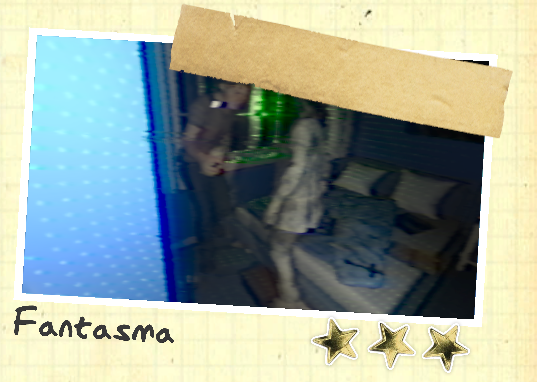

Fantasma
En Phasmophobia, cada fantasma tiene comportamientos únicos, habilidades especiales y tres evidencias clave que permiten identificarlo, algunos tienen evidencias aseguradas, lo que significa que siempre mostrarán esa prueba en particular. Pueden ser agresivos, otros más sigilosos y algunos pueden manipular su entorno de formas aterradoras. Conocer sus características te ayudará a descubrir su identidad sin convertirte en su próxima víctima. ¡Prepárate para enfrentarte a lo desconocido y afina tus habilidades de investigador paranormal!
- Evidencias: Escritura Fantasmal , EMF 5 , Spirit Box.
- Habilidad: No tiene habilidades especiales, pero es muy impredecible. Si se usa Incienso cerca de el no podrá iniciar una cacería durante 180seg en lugar de los 90seg que tardan la mayoría de los demás fantasma.
- Evidencia Asegurada: Ninguna.
- Evidencias: EMF 5, Spirit Box, D.O.T.S.
- Habilidad Especial: El Espectro nunca pisará la sal ni dejará huellas UV. Puede teletransportarse a un jugador fuera de una cacería, lo que generará una lectura de EMF 2 o 5.
- Evidencia Asegurada: Ninguna.
- Evidencias: Huellas Dactilares, Spirit Box, D.O.T.S.
- Habilidad Especial: Tiene un parpadeo mucho más largo durante cacerías, haciéndolo parecer casi invisible. Tomar una foto del Fantasma durante un evento lo hará desaparecer. El sonido del evento seguirá escuchándose, pero el Fantasma no estará ahí. No aparece en las fotos de fantasmas. Mirarlo reduce la cordura en 0.5% por segundo. Tiene más probabilidad de manifestarse como una sombra en eventos de fantasma. Puede teletransportarse a un jugador aleatoriamente, causando un EMF 2 en esa ubicación.
- Evidencia Asegurada: Ninguna.
- Evidencias: Huellas Dactilares, Escritura Fantasmal, Spirit Box.
- Habilidad Especial: Puede lanzar múltiples objetos a la vez (hasta 3-4 en un solo evento). Puede hacer que los objetos leviten antes de lanzarlos. Si lanza muchos objetos a la vez, drena 2% de cordura por objeto lanzado. Si hay muchos objetos cerca, será más activo y agresivo.
- Evidencia Asegurada: Ninguna.
- Evidencias: Huellas Dactilares, Orbes Fantasmales, D.O.T.S.
- Habilidad Especial: Al inicio del juego, la Banshee elige a un jugador como objetivo. Caza basándose en la cordura del objetivo: 50% de cordura. Cuando el objetivo muere, la Banshee selecciona uno nuevo. Mayor probabilidad de eventos fantasmales cantando. Si desaparece al acercarte durante un evento de canto, tu cordura disminuirá un 15% en lugar de un 10%. Tiene un sonido único en el micrófono parabólico (grito). Ignorará a todos los jugadores que no sean su objetivo durante una caza. Si el objetivo no está en la casa, cazará normalmente. Los Incienso funcionan con jugadores que no son el objetivo, pero no completarán la tarea de "repeler al fantasma con incienso mientras te persigue".
- Evidencia Asegurada: Ninguna.
- Evidencias: EMF 5, Huellas Dactilares, Temperaturas Heladas.
- Habilidad Especial: Si el cuadro electrico está encendido y el Jinn tiene línea de visión con un jugador, se moverá más rápido (hasta 2.5 m/s) hasta que esté a 3 metros del jugador. No puede apagar el cuadro electrico (si lo hace, es porque encendió demasiadas luces). Cuando está a menos de 3m de un jugador, se ralentiza a la velocidad normal. Puede drenar un 25% de cordura si está cerca de un jugador y el cuadro electrico está encendido (esto genera una señal EMF 2 o 5 en el cuadro electrico).
- Evidencia Asegurada: Ninguna.
- Evidencias: Orbes Fantasmales, Escritura Fantasmal, Spirit Box
- Habilidad Especial: Puede cazar con 60% de cordura si las luces están apagadas, pero con 40% de cordura si están encendidas. Si un jugador enciende una luz cerca de una Pesadilla, hay una posibilidad de que la apague inmediatamente. No puede encender luces y es más probable que las apague. Mayor probabilidad de realizar un evento donde rompe una bombilla de luz.
- Evidencia Asegurada: Ninguna.
- Evidencias: Orbes Fantasmales, Escritura Fantasmal, Temperaturas Heladas.
- Habilidad Especial: Se mueve extremadamente rápido cuando detecta a un jugador(3 m/seg), pero lento si no tiene un objetivo a la vista(1 m/seg).
- Evidencia Asegurada: Ninguna.
- Evidencias: EMF 5, Escritura Fantasmal, Temperaturas Heladas.
- Habilidad Especial: Es el fantasma menos activo y prefiere manifestarse solo cuando los jugadores están lejos. No iniciará eventos fantasmales si un jugador está muy cerca. Puede cazar desde 35% de cordura (más bajo que la mayoría de fantasmas). Rara vez aparece en forma física durante eventos fantasmales.
- Evidencia Asegurada: Ninguna.
- Evidencias: Huellas Dactilares, Escritura Fantasmal, Temperaturas Heladas.
- Habilidad Especial: Uno de los fantasmas más agresivos, puede cazar desde 70% de cordura. Tiene un tiempo de espera más corto entre cacerías. Puede cazar inmediatamente después de un evento fantasmal.
- Evidencia Asegurada: Ninguna.
- Evidencias: Orbes Fantasmales, Temperaturas Heladas, D.O.T.S.
- Habilidad Especial: Mirarlo drena la cordura más rápido que otros fantasmas. Puede cerrar puertas aleatoriamente lo que reduce la cordura de los jugadores cercanos.
- Evidencia Asegurada: Ninguna.
- Evidencias: EMF 5, Temperaturas Heladas, D.O.T.S.
- Habilidad Especial: No puede hacer el evento de "niebla" o "bola de aire". Drena doble cordura cuando hace un evento de fantasma. Es más visible durante una cacería, parpadea menos que otros fantasmas. Prefiere manifestarse en forma completa en eventos de fantasma, en lugar de una forma sombría o translúcida. Más activo cuando hay más jugadores en la misma habitación.
- Evidencia Asegurada: Ninguna.
- Evidencia:
- Habilidad Especial:
- Evidencia Asegurada:
- Evidencias:Huellas Dactilares, Temperaturas Heladas, Orbes Fantasmales.
- Habilidad Especial: Se mueve más rápido en temperaturas frías y más lento en temperaturas cálidas. Si el disyuntor está apagado, su velocidad aumenta. Deja aliento frío cuando está cazando.
- Evidencia Asegurada: Temperaturas Heladas.
- Evidencias: EMF 5, Huellas Dactilares, D.O.T.S.
- Habilidad Especial: Solo se ve a través del D.O.T.S. en cámaras de la camioneta. No cambia de habitación una vez que ha sido identificado.
- Evidencia Asegurada: D.O.T.S.
- Evidencias: EMF 5, Huellas Dactilares, Escritura Fantasmal.
- Habilidad Especial: Durante una cacería, solo se puede escuchar a una distancia de 12 metros o menos (incluyendo pasos y sonidos). Otros fantasmas se pueden escuchar hasta 20 metros. Más propenso a hacer sonidos paranormales que se detectan con el micrófono parabólico. Para comprobar si es un Myling, escóndete con una linterna encendida o coloca un DOTS en el suelo: Si solo escuchas los pasos justo cuando tu equipo comienza a parpadear, es probable que sea un Myling.
- Evidencia Asegurada: Ninguna.
- Evidencias: Orbes Fantasmales, Spirit Box, Temperaturas Heladas
- Habilidad Especial: No puede cazar si hay una llama encendida cerca (4m de distancia). Si sopla 3 llamas y no hay otras cercanas, iniciará una cacería sin importar la cordura. Cada vez que apaga una vela o un encendedor, tiene un 50% de probabilidad de iniciar una cacería. Este porcentaje aumenta un 25% por cada jugador muerto. Si dos jugadores han muerto, cazará siempre que apague una vela. Si usa un Crucifijo sin antes apagar una vela, no es un Onryo.
- Evidencia Asegurada: Ninguna.
- Evidencias: EMF 5, Spirit Box, Temperaturas Heladas.
- Habilidad Especial: Pueden atacar desde dos ubicaciones distintas(No al mismo Tiempo). Uno es más rápido que un fantasma promedio y el otro más lento. Pueden generar actividad en dos lugares diferentes al mismo tiempo.
- Evidencia Asegurada: Ninguna.
- Evidencias: EMF 5, Orbes Fantasmales, D.O.T.S.
- Habilidad Especial: Se vuelve más rápido cuando está cerca de equipos electrónicos encendidos (2.7 m/s). Durante una cacería, aumenta su radio de interferencia (puede afectar linternas y radios a mayor distancia). Puede cazar desde 65% de cordura si hay un equipo electrónico encendido cerca.
- Evidencia Asegurada: Ninguna.
- Evidencias: EMF 5, Huellas Dactilares, Orbes Fantasmales.
- Habilidad Especial: Único fantasma que puede dejar una huella dactilar de 6 dedos (16.7% de probabilidad). Tiene un 25% de probabilidad de no dejar huellas dactilares. Durante una cacería, tiene un 6.66% de probabilidad de cambiar de modelo de fantasma. Para comprobar si es un Obake, intenta rodearlo en una cacería y observa si cambia de forma.
- Evidencia Asegurada: Huellas Dactilares.
- Evidencias: Huellas Dactilares, Temperaturas Heladas, SpiritBox
- Habilidad Especial: El único fantasma que puede dar una evidencia extra. Puede copiar el comportamiento de cualquier otro fantasma. No cambia su comportamiento en mitad de una cacería.
- Evidencia Asegurada: Siempre tiene Orbes de Fantasma como evidencia extra(Por lo tanto, en una partida normal de 3 evidencias, el Mímico tendría 4 evidencias).
- Evidencias: Spirit Box, Escritura Fantasmal, Temperaturas Heladas.
- Habilidad Especial: Se vuelve más rápido conforme baja la cordura promedio (puede alcanzar hasta 3.71 m/s). Puede maldecir a un jugador si este escucha su voz a través de la Spirit Box o el micrófono parabólico: La drenación de cordura se duplica y no se detiene ni en la luz. El efecto desaparece si el jugador toma Pastillas de Cordura. Si se usa un Incienso durante una cacería, el Moroi no puede ver ni matar jugadores por 12 segundos (otros fantasmas solo 6 segundos).
- Evidencia Asegurada: Spirit Box.
- Evidencias: Spirit Box, Escritura Fantasmal, D.O.T.S.
- Habilidad Especial: Siempre sabe dónde está el jugador. Corre muy rápido si está lejos del jugador, pero es extremadamente lento cuando se acerca.
- Evidencia Asegurada: Spirit Box.
- Evidencias: Orbes Fantasmales, Escritura Fantasmal, D.O.T.S.
- Habilidad Especial: Al inicio es muy agresivo y rápido, pero se debilita con el tiempo si el jugador se encuentra en la habitacion de el fantasma.
- Evidencia Asegurada: Ninguna.